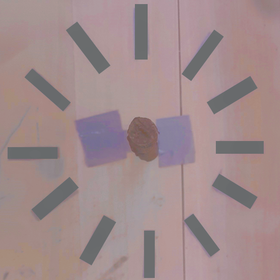

Groupe : Legendre Clémence, Huré Romain, Legrand Margaux
- Thème choisi :
Le cycle jour-nuit.
- Problématique envisagée :
Comment un cadran solaire peut-il permettre de connaître l'heure ?
- Hypothèse :
Lors de la période de révolution de la Terre (24 heures) le Soleil est en
mouvement dans notre ciel, l’ombre projetée par le cadran peut donc indiquer
l’heure s’il est bien positionné.
- Protocole :
fabriquer un cadran solaire.
- Matériel :
- Un support plat (planche de bois)
- Un bâton de plus ou moins 50 cm
- Un marqueur
- Fabrication :
Placer le support sur un sol plat et placer le bâton au centre à la verticale,
venir indiquer la place de l’ombre sur la planche toutes les heures (commencer
à 7 heure).
- Expérience :
On place un témoin dont l'ombre n'est pas influencer par le soleil.
On releve la position de l'ombre du cadran placé au soleil à heures fixes
pendant une journée on marque la position et l'heure. Puis, le deuxiéme
jour, on verifie aux mêmes heures si la position de l'ombre correspond.
Si c'est le cas, on peut conclure que la position du soleil dans le ciel
est semblabe a chaques jours à la même heure, ce qui permet de valider
notre hypothése.
